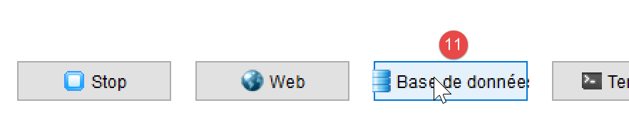
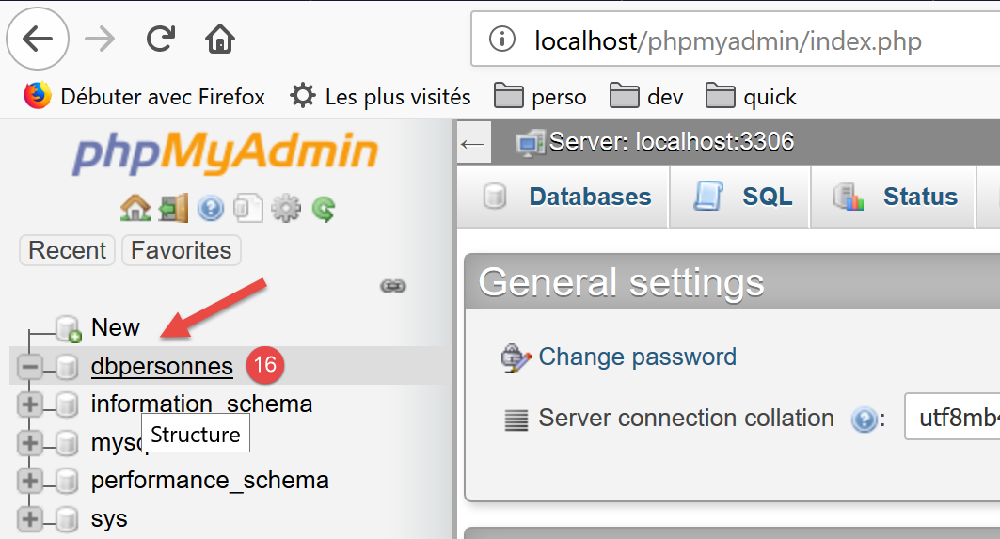

12. Using the MySQL DBMS

We will now write PHP scripts using a MySQL database:

In the architecture above, the PHP script (1) does not communicate directly with the DBMS (Database Management System) (3). It communicates with an intermediary called a DBMS driver. PHP provides a standard interface for these drivers, the PDO (PHP Data Objects) interface. This interface is implemented by different classes tailored to each DBMS: one class for the MySQL DBMS, another for the PostgreSQL DBMS… To switch DBMSes, we switch drivers:

The PDO driver isolates the PHP script (1) from the DBMS (3, 6). Since these drivers implement a standard interface, one might expect the PHP script (1) to remain unchanged when switching from the MySQL DBMS (3) to the PostgreSQL DBMS (6). In reality, this ideal does not exist. In fact, to communicate with the DBMS, the PHP script sends SQL (Structured Query Language) commands. This is a language implemented by all DBMSs but is incomplete. Consequently, DBMSs have added proprietary commands to it. This is a primary cause of incompatibility between DBMSs. Furthermore, the data types that can be used in databases may differ from one DBMS to another. For example, PostgreSQL supports a much wider range of data types than the MySQL DBMS. This is a second cause of incompatibility. Another cause is the handling of automatic primary keys (generated by the DBMS): virtually every DBMS has its own policy. Etc… There are numerous causes of incompatibility.
If you want to avoid rewriting the PHP script (1) when switching from MySQL (3) to PostgreSQL (6), you generally need to insert a new layer between the PHP script (1) and the PDO driver (2, 5), whose role will be to resolve the incompatibilities between the two DBMSs. However, in the simple cases we will encounter, this additional layer will not be necessary.
We will now use the MySQL DBMS. This is included in the Laragon package (see link section).
If the reader is new to the concepts of databases and SQL, they may find the document [http://sergetahe.com/cours-tutoriels-de-programmation/cours-tutoriel-sql-avec-le-sgbd-firebird/] helpful. This document uses the Firebird DBMS rather than MySQL but covers the fundamentals of databases and SQL. Like MySQL, Firebird offers a freely available version with a small memory footprint.
12.1. Creating a Database
We will now show you how to create a database and a MySQL user using the Laragon tool.

- Once launched, Laragon [1] can be managed from a menu [2];
- In [3-5], install the MySQL administration tool [phpMyAdmin] if it has not already been installed;

- In [6], start the Apache web server and the MySQL DBMS;
- In [7], the Apache server is started;
- In [8], the MySQL database server is launched;

- In [8-10], create a database named [dbpersonnes] [11]. We will build a database of people;

- in [11], we will manage the database we just created;

- The [Databases] operation sends a web request to the URL [http://localhost/phpmyadmin]. Laragon’s Apache web server responds. The URL [http://localhost/phpmyadmin] is the URL for the [phpMyAdmin] utility that we installed earlier [5]. This utility allows you to manage MySQL databases;
- by default, the database administrator’s login credentials are: root [13] with no password [14];

- in [16], the database we created earlier;

- for now, we have a database [dbpersonnes] [17] that is empty [18];
We create a user [admpersonnes] with the password [nobody] who will have full privileges on the [dbpersonnes] database:

- in [19], we are positioned on the database [dbpersonnes];
- in [20], we select the [Privileges] tab;
- in [21-22], we see that the user [root] has full privileges on the [dbpersonnes] database;
- in [23], we create a new user;

- in [25-26], the user will have the username [admdbpersonnes];
- in [27-29], their password will be [nobody];
- In [30], phpMyAdmin reports that the password is very weak (easy to crack). In a production environment, it is best to generate a strong password using [31];
- In [32], it is specified that the user [admdbpersonnes] must have full privileges on the [dbpersonnes] database;
- In [33], the information provided is validated;

- In [35], phpMyAdmin indicates that the user has been created;
- In [36], the SQL query that was executed on the database;
- In [37], the user [admpersonnes] has full privileges on the [dbpersonnes] database;
Now we have:
- a MySQL database [dbpersonnes];
- a user [admpersonnes/nobody] who has full access to this database;
We will write PHP scripts to interact with the database. PHP has various libraries for managing databases. We will use the PDO (PHP Data Objects) library, which acts as an intermediary between the PHP code and the DBMS:

The PDO library allows the PHP script to abstract itself from the exact nature of the DBMS being used. Thus, as shown above, the MySQL DBMS can be replaced by the PostgreSQL DBMS with minimal impact on the PHP script code. This library is not available by default. You can check its availability as follows:

- In [1-4], check the active PDO extensions;
- in [5], you can see that the PDO extension for the MySQL DBMS is active. The others are not. Simply click on them to activate them;
Another way to enable an extension is to directly edit the [php.ini] file (see link) that configures PHP:

- in [1], the MySQL PDO extension is enabled;
- In [2], the Firebird PDO extension is disabled;
After modifying the [php.ini] file, you must restart Laragon’s PHP for the changes to take effect.
12.2. Connecting to a MySQL database
Connecting to a DBMS is done by constructing a PDO object. The constructor accepts various parameters:
The parameters have the following meanings:
$dsn | (Data Source Name) is a string specifying the type of DBMS and its location on the internet. The string "mysql:host=localhost" indicates that we are dealing with a MySQL DBMS running on the local server. This string may include other parameters, such as the DBMS listening port and the name of the database to which we want to connect: "mysql:host=localhost:port=3306:dbname=dbpersonnes"; |
$user | username of the user logging in; |
$passwd | their password; |
$driver_options | an array of options for the DBMS driver; |
Only the first parameter is required. The object created in this way will then serve as the basis for all operations performed on the database to which you have connected. If the PDO object could not be created, a PDOException is thrown.
Here is an example of a connection [mysql-01.php]:
<?php
// connection to a local MySQL database
// the user ID is (admpersonnes,nobody)
const ID = "admpersonnes";
const PWD = "nobody";
const HOST = "localhost";
try {
// connection
$dbh = new PDO("mysql:host=".HOST, ID, PWD);
print "Connection successful\n";
// Close the connection
$dbh = NULL;
} catch (PDOException $e) {
print "Error: " . $e->getMessage() . "\n";
exit();
}
Results:
Comments
- Line 11: The connection to a DBMS is established by creating a PDO object. The constructor is used here with the following parameters:
- a string specifying the type of DBMS and its location on the internet. The string "mysql:host=localhost" indicates that we are dealing with a MySQL DBMS running on the local server. The port has not been specified. Port 3306 is then used by default. The database name is not specified either. A connection will then be established to the MySQL DBMS, with the selection of a specific database to be made later;
- a user ID;
- its password;
- line 14: the connection is closed by destroying the PDO object created initially;
- line 15: the connection to a DBMS may fail. In this case, a PDOException is thrown. This exception is derived from the PHP [RuntimeException];
- line 16: the exception’s error message is displayed;
Let’s rerun the script by entering an incorrect password on line 6. The result is as follows:
Error: SQLSTATE[HY000] [1045] Access denied for user 'admpersonnes'@'localhost' (using password: YES)
12.3. Creating a table
The script [mysql-02.php] demonstrates how to create a table in a database:
<?php
// database identity
const DSN = "mysql:host=localhost;dbname=dbpersonnes";
// user credentials
const ID = "admpersonnes";
const PWD = "nobody";
try {
// Connect to the MySQL database
$connection = new PDO(DSN, ID, PWD);
// delete the 'people' table if it exists
$sql = "drop table people";
$connection->exec($sql);
// Create the people table
$sql = "create table people (first_name varchar(30) NOT NULL, last_name varchar(30) NOT NULL, age integer NOT NULL, primary key(last_name, first_name))";
$connection->exec($sql);
} catch (PDOException $ex) {
// display error
print "Error: " . $ex->getMessage() . "\n";
} finally {
// disconnect if necessary
$connection = NULL;
}
// end
print "Done\n";
exit;
Comments
- line 11: connect to the database. This is always the first thing to do. The result of the connection is a [PDO] object through which database operations will be performed;
- line 13: the SQL statement [drop table people] will delete the [people] table from the [people_db] database. If the [people] table does not exist, this does not cause an error;
- line 14: execution of the previous SQL statement on the [dbpersonnes] database. This execution may throw a [PDOException], which will be caught on line 18;
- Line 16: This SQL statement creates a table named [people]. A table consists of rows and columns. The columns make up what is called the table structure. The rows make up the table’s content. A database can contain one or more tables. The [people] table will have three columns:
- first_name: a person’s first name as a string of up to 30 characters;
- last_name: the last name of that same person as a string of up to 30 characters;
- age: the person’s age as an integer;
- The NOT NULL attribute on a column requires that the column have a value. Failing to provide one results in a [PDOException];
- [primary key(last_name,first_name)] sets a primary key for the [people] table. A primary key has a unique value for each row in the table. Here, the primary key is obtained by concatenating the [last_name] and [first_name] columns of the row. This constraint ensures that the table cannot contain two people with the same last and first names—i.e., two people with the same name. Creating a duplicate entry for a person in the table triggers a [PDOException];
- line 17: execution of the SQL query on the [dbpersonnes] database;
- line 20: if a [PDOException] occurs, the associated error message is displayed;
- lines 21–24: we enter the [finally] clause in all cases, whether an exception occurs or not, to close the database connection (line 23);
Results:
If the script executes without errors, the table can be seen in phpMyAdmin:


- in [3] the database;
- in [4], the table is displayed;
- in [5], the table structure is displayed in the [Structure] tab;
- in [6-8], the three columns of the table;
- in [9], none of the three columns can be empty;

- in [10], the list of table indexes. An index allows you to find rows in the table with a specific index faster than if you were to sequentially scan the table’s rows. The primary key is always part of the indexes, but an index may not be a primary key;
- in [11], the index is the primary key here;
- in [12], the index consists of the [last_name, first_name] columns of each row;
Now, let’s see what happens if we create errors in the database name, the user name, and the password, respectively:
If we enter a non-existent database name:
Error: SQLSTATE[HY000] [1044] Access denied for user 'admpersonnes'@'%' to database 'dbpersonnes2'
If we enter a non-existent username:
Error: SQLSTATE[HY000] [1045] Access denied for user 'admpersonnes2'@'localhost' (using password: YES)
If an incorrect password is entered:
Error: SQLSTATE[HY000] [1045] Access denied for user 'admpersonnes'@'localhost' (using password: YES)
12.4. Filling a table
We will write a PHP script that executes SQL commands found in the following text file [creation.txt]:
Comments
- SQL (Structured Query Language) is not case-sensitive (upper/lowercase) for SQL commands;
- Line 1: We drop the [people] table if it exists;
- Line 2: We tell the MySQL server that we will be sending it characters encoded in UTF-8. This MySQL-specific SQL command is necessary here, for example, to ensure that the "é" in Géraldine appears correctly in the database. If we omit line 2, the "é" will be converted into a sequence of two strange characters. The client is the PHP script written in NetBeans. This script encodes the files in UTF-8 [1-4] as shown below:

- line 3: creation of the [people] table with three columns (first_name, last_name, age) and the primary key (last_name, first_name);
- lines 4–10: insertion of 7 rows into the [people] table;
- line 6: this insertion statement should fail because it attempts the same insertion as line 5. The primary key constraint should prevent this insertion: two people cannot have the same first and last names;
- line 10: this insert statement should fail because it attempts the same insertion as line 9;
The PHP script responsible for executing the SQL statements in this text file is as follows [mysql-03.php]:
<?php
// database credentials
const DSN = "mysql:host=localhost;dbname=dbpersonnes";
// user credentials
const ID = "admpersonnes";
const PWD = "nobody";
// filename of the text file containing SQL commands to execute
const SQL_COMMANDS_FILENAME = "creation.txt";
// Open connection to the MySQL database
try {
$connection = new PDO(DSN, ID, PWD);
} catch (PDOException $ex) {
// display error
print "Error: " . $ex->getMessage() . "\n";
exit;
}
// We want an exception to be thrown for every DBMS error
$connection->setAttribute(PDO::ATTR_ERRMODE, PDO::ERRMODE_EXCEPTION);
// execute the SQL command file
$errors = executeCommands($connection, SQL_COMMANDS_FILENAME, TRUE, FALSE);
// close connection
$connection = NULL;
// display number of errors
printf("\n-----------------------\nThere were %d error(s)\n", count($errors));
for ($i = 0; $i < count($errors); $i++) {
print "$errors[$i]\n";
}
// Done
print "Done\n";
exit;
// ---------------------------------------------------------------------------------
function executeCommands(PDO $connection, string $SQLFileName, bool $trace = FALSE, bool $stop = TRUE): array {
// use the $connection connection
// executes the SQL commands contained in the text file SQLFileName
// this file is a file of SQL commands to be executed, one per line
// if $tracking=1, then each execution of an SQL command is followed by a message indicating whether it succeeded or failed
// if $stop=1, the function stops at the first error encountered; otherwise, it executes all SQL commands
// the function returns an array (number of errors, error1, error2…)
// Check if the file SQLFileName exists
if (!file_exists($SQLFileName)) {
return ["The file [$SQLFileName] does not exist"];
}
// Execute the SQL queries contained in SQLFileName
// put them into an array
$queries = file($SQLFileName);
// error?
if ($queries === FALSE) {
return ["Error while processing the SQL file [$SQLFileName]"];
}
// execute the queries one by one - initially no errors
$errors = [];
$i = 0;
$done = FALSE;
while ($i < count($requests) && !$done) {
// retrieve the text of the query
// trim removes the line break
$request = trim($requests[$i]);
// Is the query empty?
if (strlen($query) == 0) {
// skip the query and move on to the next one
$i++;
continue;
}
try {
// execute the query - an exception may be thrown
$connection->exec($query);
// display output or not?
if ($logging) {
print "$request: Execution successful\n";
}
} catch (PDOException $ex) {
// An error occurred
addError($errors, $query, $ex->getMessage(), $tracking);
// should we stop?
$finished = $stop;
}
// next request
$i++;
}
// result
return $errors;
}
function addError(array &$errors, string $request, string $msg, bool $track): void {
// add an error message
$msg = "$request: Error (" . $msg . ")";
$errors[] = $msg;
// Track on screen or not?
if ($log) {
print "$msg\n";
}
}
Comments
- The [executeCommands] function (lines 36–89) is responsible for executing the SQL commands found in the text file [$SQLFileName] (parameter 2). To execute them, it uses the open connection [$connection] (parameter 1) to the MySQL server. The third parameter [$log] is a boolean that controls screen output: if TRUE, the executed SQL statement is displayed on the screen along with its success or failure; otherwise, the execution of the SQL statement is silent. The fourth parameter [$stop] controls what to do when an SQL command fails: if TRUE, it indicates that the execution of SQL commands must stop; otherwise, it continues. The [executeCommands] function returns an array of error messages, empty if there were no errors;
- lines 11–18: we open the connection to the MySQL database [dbpersonnes]. If opening the connection fails, an error message is displayed and the process stops (lines 14–18);
- line 22: We then pass an open connection to the [executeCommands] function. It will be closed when the function returns (line 24);
- line 20: Before passing it to the [executeCommands] function, the connection is configured. In case of an error, SQL operations with a [PDO] object can either return the boolean FALSE (default value) or throw an exception. Line 20 chooses the latter option. Indeed, it is easy to “forget” to check the Boolean result of executing an SQL command. This will eventually cause an error elsewhere in the code, making it harder to trace back to the original source. In the case of an unhandled exception (no catch block), the exception will propagate up the code chain until it encounters a catch block or reaches the PHP interpreter, which will intercept the exception. In this case, the nature of the exception and its origin in the code are displayed;
- line 22: the [executeCommands] function is called to execute the SQL command file [$SQLFileName];
- lines 45–47: we verify that the SQL command file actually exists. If not, we log the error and return this result;
- line 51: the SQL commands are placed in an array [$queries]. Lines 53–55: if the operation fails, an error array containing a single message is returned;
- line 57: we accumulate the errors in the array [$errors];
- line 58: query number;
- line 59: the boolean [$finished] controls the execution of the SQL statements in the array [$queries]. When it becomes TRUE, execution stops;
- line 60: we loop through all queries;
- line 63: we extract the text of SQL command #i. The [trim] function removes the spaces before and after the SQL command text. By “spaces,” we mean the space character \b, the carriage return \r, the line feed \n, the form feed \f, the tab \t… What matters here is that the line feed in the SQL text will be removed;
- lines 65–69: if the SQL text is empty, then the query is ignored and we move on to the next one;
- line 72: we send the SQL command to the MySQL server. The [PDO::exec] method will throw an exception if execution fails. Note that this behavior is due to the configuration set on line 20;
- line 79: the error message is added to the error array;
- line 81: the boolean [$fini] that controls the loop is set. If the parameter [$arrêt] (line 36) is TRUE, the loop must be stopped;
- lines 74–76: if the SQL statement executed successfully, it is displayed on the screen if the parameter [$tracking] (line 36) is TRUE;
- Line 87: Once all SQL statements have been executed, the error array [$errors] is returned;
The [adError] function in lines 90–97 allows an error to be added to the error array [$errors]:
- line 90: the function takes 4 parameters:
- the [$errors] parameter is passed by reference. This is because we want to modify the array passed as a parameter, not a copy of it;
- the [$query] parameter is the SQL text of the failed statement;
- the parameter [$msg] is the error message associated with the failed query;
- the boolean [$log] indicates whether the error message should be displayed ($log=TRUE) or not ($log=FALSE) on the console;
The [executeCommands] function is called by the script in lines 3–33:
- lines 11–18: a connection is established with the MySQL database [dbpersonnes];
- line 20: the connection is configured;
- line 22: the SQL command file is then executed;
- line 24: the connection is closed;
- Lines 26–29: Display the errors returned by the [executeCommands] function;
Screen output:
drop table if exists people: Execution successful
SET NAMES 'utf8': Execution successful
create table people (first_name varchar(30) not null, last_name varchar(30) not null, age integer not null, primary key (last_name, first_name)): Execution successful
insert into people (first_name, last_name, age) values('Paul','Langevin',48): Execution successful
insert into people (first_name, last_name, age) values ('Sylvie','Lefur',70): Execution successful
insert into people (first_name, last_name, age) values ('Sylvie','Lefur',70) : Error (SQLSTATE[23000]: Integrity constraint violation: 1062 Duplicate entry 'Lefur-Sylvie' for key 'PRIMARY')
insert into people (first_name, last_name, age) values ('Pierre','Nicazou',35) : Execution successful
insert into people (first_name, last_name, age) values ('Géraldine','Colou',26) : Execution successful
insert into people (first_name, last_name, age) values ('Paulette','Girond',56) : Execution successful
insert into people (first_name, last_name, age) values ('Paulette','Girond',56) : Error (SQLSTATE[23000]: Integrity constraint violation: 1062 Duplicate entry 'Girond-Paulette' for key 'PRIMARY')
-----------------------
There were 2 errors
insert into people (first_name, last_name, age) values ('Sylvie','Lefur',70) : Error (SQLSTATE[23000]: Integrity constraint violation: 1062 Duplicate entry 'Lefur-Sylvie' for key 'PRIMARY')
insert into people (first_name, last_name, age) values ('Paulette','Girond',56) : Error (SQLSTATE[23000]: Integrity constraint violation: 1062 Duplicate entry 'Girond-Paulette' for key 'PRIMARY')
Done
The inserted records are visible in phpMyAdmin:

12.5. Executing arbitrary SQL statements
The following script demonstrates the execution of SQL statements from the following text file [sql.txt]:
Among these SQL statements, there is the SELECT statement, which returns results from the database; the INSERT, UPDATE, and DELETE statements, which modify the database without returning results; and finally, invalid statements such as the last one (xselect). The [mysql-04.php] script is as follows:
<?php
// database credentials
const DSN = "mysql:host=localhost;dbname=dbpersonnes";
// user credentials
const ID = "admpersonnes";
const PWD = "nobody";
// path to the text file containing SQL commands to execute
const SQL_COMMANDS_FILENAME = "sql.txt";
try {
// connection to the MySQL database
$connection = new PDO(DSN, ID, PWD);
} catch (PDOException $ex) {
// display error
print "Error: " . $ex->getMessage() . "\n";
exit;
}
// We want an exception to be thrown for every DBMS error
$connection->setAttribute(PDO::ATTR_ERRMODE, PDO::ERRMODE_EXCEPTION);
// execute the SQL command file
$errors = executeCommands($connection, SQL_COMMANDS_FILENAME, TRUE, FALSE);
// Close connection
$connection = NULL;
// display number of errors
printf("\n-----------------------\nThere were %d error(s)\n", count($errors));
for ($i = 0; $i < count($errors); $i++) {
print "$errors[$i]\n";
}
// Done
print "Done\n";
exit;
// ---------------------------------------------------------------------------------
function executeCommands(PDO $connection, string $SQLFileName, bool $trace = FALSE, bool $stop = TRUE): array {
………………………………………………………….
// execute queries one by one - initially no errors
$errors = [];
$i = 0;
$done = FALSE;
while ($i < count($requests) && !$done) {
// retrieve the text of the query
// trim removes the line break
$request = trim($requests[$i]);
// Is the query empty?
if (strlen($query) == 0) {
// skip the query and move on to the next one
$i++;
continue;
}
// execute the request
// retrieve its name
$command = "";
if (preg_match("/^\s*(\S+)/", $query, $fields)) {
$order = strtolower($fields[0]);
}
try {
// Is this a SELECT statement?
if ($query === "select") {
$result = $connection->query($query);
} else {
$result = $connection->exec($query);
}
// Track screen or not?
if ($log) {
print "[$query] : Execution successful\n";
}
// display the result of the execution
displayInfo($command, $result);
} catch (PDOException $ex) {
// An error occurred
addError($errors, $query, $ex->getMessage(), $tracking);
// should we stop?
$finished = $stop;
}
// next request
$i++;
}
// result
return $errors;
}
function addError(array &$errors, string $request, string $message, bool $track): void {
…
}
// ---------------------------------------------------------------------------------
function displayInfo(string $query, $result): void {
// displays the $result of an SQL query
// Was it a SELECT query?
switch ($query) {
case "select":
// display the field names
$title = "";
$numberOfColumns = $result->columnCount();
for ($i = 0; $i < $numberOfColumns; $i++) {
$info = $result->getColumnMeta($i);
$title .= $info['name'] . ",";
}
// remove the last character ,
$title = substr($title, 0, strlen($title) - 1);
// display the list of fields
print "$title\n";
// separator line
$separators = "";
for ($i = 0; $i < strlen($title); $i++) {
$separators .= "-";
}
print "$separators\n";
// data
foreach ($result as $row) {
$data = "";
for ($i = 0; $i < $nbColumns; $i++) {
$data .= $row[$i] . ",";
}
// remove the last character ,
$data = substr($data, 0, strlen($data) - 1);
// display
print "$data\n";
}
break;
case "update":
case "insert":
case "delete";
print " $result rows have been modified\n";
break;
}
}
Comments
- lines 36–83: the [executeCommands] function is slightly modified: the SQL command [select] does not execute in the same way as other SQL commands. This command is the only one that returns a table as a result, i.e., a set of rows and columns from the database;
- lines 55–57: We extract the first word of the SQL statement using a regular expression;
- lines 60–64: if the SQL command is [select], the [PDO::query] method is used; otherwise, the [PDO::exec] method is used to execute the SQL command. In both cases, if execution fails, an exception is thrown and caught in lines 71–77. If execution succeeds, line 70 displays the result;
- lines 90–130: the displayInfo function displays information about the result of executing an SQL command;
- line 94: we handle the [select] case. Its result is an object of type [PDOStatement];
- line 96: the [PDOStatement::getColumnCount()] method returns the number of columns in the result table of the select;
- lines 98–99: the [PDOStatement::getMeta(i)] method returns a dictionary of information about column i of the SELECT result table. In this dictionary, the value associated with the 'name' key is the column name;
- lines 97–102: the names of the columns in the result table of the SELECT statement are concatenated into a string;
- lines 105-110: a separator line is constructed with the same length as the previously constructed string;
- lines 112–121: A PDOStatement object can be iterated over using a foreach loop. At each iteration, the returned element is a row from the SELECT result table in the form of an array of values representing the values of the row’s various columns. All these values are displayed using a for loop (lines 114–116);
- lines 123–127: The result of executing an insert, update, or delete statement is the number of rows modified by the statement;
Screen results:
[set names 'utf8']: Execution successful
[select * from people]: Execution successful
first_name,last_name,age
--------------
Géraldine,Colou,26
Paulette, Girond, 56
Paul, Langevin, 48
Sylvie, Lefur, 70
Pierre, Nicazou, 35
[select last_name, first_name from people order by last_name asc, first_name desc]: Query executed successfully
last_name,first_name
----------
Colou, Géraldine
Girond, Paulette
Langevin, Paul
Lefur, Sylvie
Nicazou, Pierre
[select * from people where age between 20 and 40 order by age desc, last_name asc, first_name asc] : Query executed successfully
first_name,last_name,age
--------------
Pierre, Nicazou, 35
Géraldine,Colou,26
[insert into people values('Josette','Bruneau',46)] : Execution successful
1 row(s) was (were) modified
[update people set age=47 where last_name='Bruneau']: Execution successful
1 row(s) has (have) been modified
[select * from people where last_name='Bruneau']: Execution successful
first_name,last_name,age
--------------
Josette,Bruneau,47
[delete from people where last_name='Bruneau']: Execution successful
1 row(s) modified
[select * from people where last_name='Bruneau']: Execution successful
first_name,last_name,age
--------------
[insert into people values('Josette','Bruneau',46)] : Execution successful
1 row(s) has (have) been modified
[xselect * from people where last_name='Bruneau']: Error (SQLSTATE[42000]: Syntax error or access violation: 1064 You have an error in your SQL syntax; check the manual that corresponds to your MySQL server version for the right syntax to use near 'xselect * from people where last_name='Bruneau'' at line 1)
-----------------------
There was 1 error
[xselect * from people where name='Bruneau'] : Error (SQLSTATE[42000]: Syntax error or access violation: 1064 You have an error in your SQL syntax; check the manual that corresponds to your MySQL server version for the right syntax to use near 'xselect * from people where name='Bruneau'' at line 1)
Done
12.6. Using Prepared SQL Statements
12.6.1. Example 1
Let's examine the following script [mysql-05.php]:
<?php
// database credentials
const DSN = "mysql:host=localhost;dbname=dbpersonnes";
// user credentials
const ID = "admpersonnes";
const PWD = "nobody";
try {
// connect to the MySQL database
$connection = new PDO(DSN, ID, PWD);
// We want an exception to be thrown for every DBMS error
$connection->setAttribute(PDO::ATTR_ERRMODE, PDO::ERRMODE_EXCEPTION);
// clear the people table
$connection->exec("delete from people");
// a list of people
$people = [];
$people[] = ["last_name" => "Langevin", "first_name" => "Paul", "age" => 47];
$people[] = ["last_name" => "Lefur", "first_name" => "Sylvie", "age" => 28];
// we'll add these people to the database
$statement = $connection->prepare("insert into people (last_name, first_name, age) values (:last_name, :first_name, :age)");
for ($i = 0; $i < count($people); $i++) {
$statement->execute($people[$i]);
}
} catch (PDOException $ex) {
// display error
print "Error: " . $ex->getMessage() . "\n";
} finally {
// close connection
$connection = NULL;
}
// Done
print "Done\n";
exit;
Comments
Here we are focusing on lines 16–24, which insert two people into the people table in the [dbpersonnes] database.
- Line 21: We ‘prepare’ a parameterized SQL statement. The parameters are preceded by the character : :last_name, :first_name, :age. To ‘prepare’ an SQL statement, we use the [PDO::prepare] method. The result is a [PDOStatement] type. "Preparation" is not execution: nothing is executed;
- Line 23: Executing the "prepared" statement using the [PDOStatement::execute] method. To do this, you must assign values to the :last_name, :first_name, and :age parameters. There are several ways to do this. Here, we use a dictionary whose keys are the parameters of the prepared statement, which we pass to the [PDOStatement::execute] method. Another way to do this is to assign a value to the parameters using the [PDOStatement::bindValue($parameter,$value)] method. For example:
$statement→bindValue(“lastName”,”Langevin”);
$statement->bindValue("lastName", "Langevin");
$statement->bindValue("age", 47);
$statement->execute();
The downside is that you have to repeat this instruction for each parameter. The dictionary method may therefore be more convenient. The [PDOStatement::execute] method returns FALSE if execution fails;
- the method used here to perform the inserts:
- a prepared statement;
- n executions of the prepared statement;
is more efficient in terms of execution time than executing n different SQL statements. This method is therefore preferable. It can be used for SELECT, UPDATE, DELETE, and INSERT SQL statements. In the case of a SELECT SQL statement, after executing it with [PDOStatement::execute], the result rows are retrieved using the [PDOStatement::fetchAll] method;
12.6.2. Example 2
The following script [mysql-06.php] demonstrates the use of a prepared statement for a SELECT SQL operation, as well as various ways to retrieve the rows returned by this operation:
<?php
// database connection
const DSN = "mysql:host=localhost;dbname=dbpersonnes";
// user credentials
const ID = "admpersonnes";
const PWD = "nobody";
try {
// connect to the MySQL database
$connection = new PDO(DSN, ID, PWD);
// We want an exception to be thrown for every DBMS error
$connection->setAttribute(PDO::ATTR_ERRMODE, PDO::ERRMODE_EXCEPTION);
// clear the people table
$connection->exec("delete from people");
// We're going to add these people to the database
$statement = $connection->prepare("insert into people (last_name, first_name, age) values (:last_name, :first_name, :age)");
for ($i = 0; $i < 10; $i++) {
$statement->execute(["last_name" => "last_name" . $i, "first_name" => "first_name" . $i, "age" => $i * 10]);
}
// query the database
$statement = $connection->prepare("select last_name, first_name, age from people");
$statement->execute();
// 1st row
$row = $statement->fetch();
var_dump($row);
// 2nd row
$row = $statement->fetch(PDO::FETCH_ASSOC);
var_dump($row);
// 3rd row
$row = $statement->fetch(PDO::FETCH_OBJ);
var_dump($row);
// 4th row
$statement->setFetchMode(PDO::FETCH_CLASS, "Person");
$row = $statement->fetch();
var_dump($row);
// sequential reading of all rows
$statement = $connection->prepare("select last_name, first_name, age from people");
$statement->execute();
$statement->setFetchMode(PDO::FETCH_CLASS, "Person");
while ($person = $statement->fetch()) {
print "$person\n";
}
} catch (PDOException $ex) {
// display error
print "Error: " . $ex->getMessage() . "\n";
} finally {
// close connection
$connection = NULL;
}
// Done
print "Done\n";
exit;
class Person {
private $lastName;
private $lastName;
private $age;
public function __toString() {
return "Person[$this->lastName, $this->firstName, $this->age]";
}
}
Comments
- lines 17–20: we insert 10 rows into the [people] table in the [admpersonnes] database:

- Line 22: We "prepare" an SQL [select] statement that we execute on line 23;
- line 25: we retrieve a row from the result of the executed SQL [select] operation using the [PDOStatement::fetch] method. The [PDOStatement::fetch] method can retrieve the result rows of a prepared SQL [select] operation in various ways. The script demonstrates a few of them. The [PDOStatement::fetch] method without parameters returns the current row of the [select] as a dictionary indexed by both column numbers and column names;
- line 26: displays the following result:
array(6) {
["name"]=>
string(4) "name0"
[0]=>
string(4) "last_name0"
["last_name"]=>
string(7) "first_name0"
[1]=>
string(7) "first_name0"
["age"]=>
string(1) "0"
[2]=>
string(1) "0"
}
- lines 28-29: the [PDO::FETCH_ASSOC] parameter ensures that the returned row is a dictionary indexed by the table's column names:
- lines 31-32: the [PDO::FETCH_OBJ] parameter ensures that the returned row is an object of type [stdclass] whose attributes are the names of the table's columns:
- Line 34: We set the fetch mode of the [fetch] method using the [PDOStatement::setFetchMode] method. This mode then becomes the default mode until it is changed either by another [PDOStatement::setFetchMode] operation or by passing a mode as a parameter to the [PDOStatement::fetch] method, as was done previously. The operation [setFetchMode(PDO::FETCH_CLASS, "Person")] indicates that the row being read must be placed in an object of type [Person]. This class must have attributes among its properties that correspond to the names of the columns in the row being read. This is the case for the [Person] class defined in lines 56–63;
- line 36 displays the following result:
- lines 38–43: show how to sequentially process the results of the [select];
- line 42: the display of [$person] will use the [__toString] method of the [Person] class;
12.7. Using Transactions
A transaction allows you to group a sequence of SQL statements into a single unit of execution: either all statements succeed, or one of them fails, in which case all SQL statements preceding it are rolled back. In other words, when using a transaction to execute SQL statements, after the transaction completes, the database is in a stable state:
- either in a new state created by the successful execution of all SQL statements in the transaction;
- or in the state it was in before the transaction began to be executed;
We will revisit the example of executing the SQL statements contained in a text file discussed in the previous section. We will include this execution within a transaction. The SQL statements will be contained in the following [sql2.txt] file:
The incorrect order of line 12 will cause the entire transaction to fail. The database should therefore revert to its state prior to the transaction. In the example above, the row inserted by line 10 should not appear in the table. The script has changed very little. However, here is the complete code [mysql-07.php] again:
<?php
// database identity
const DSN = "mysql:host=localhost;dbname=dbpersonnes";
// user credentials
const ID = "admpersonnes";
const PWD = "nobody";
// path to the text file containing SQL commands to execute
const SQL_COMMANDS_FILENAME = "sql2.txt";
try {
// connection to the MySQL database
$connection = new PDO(DSN, ID, PWD);
} catch (PDOException $ex) {
// display error
print "Error: " . $ex->getMessage() . "\n";
exit;
}
// We want an exception to be thrown for every DBMS error
$connection->setAttribute(PDO::ATTR_ERRMODE, PDO::ERRMODE_EXCEPTION);
// execute the SQL command file
$errors = executeCommands($connection, SQL_COMMANDS_FILENAME, TRUE);
// Close connection
$connection = NULL;
// display number of errors
printf("\n-----------------------\nThere were %d error(s)\n", count($errors));
for ($i = 0; $i < count($errors); $i++) {
print "$errors[$i]\n";
}
// Done
print "Done\n";
exit;
// ---------------------------------------------------------------------------------
function executeCommands(PDO $connection, string $SQLFileName, bool $trace = FALSE): array {
// use the $connection connection
// executes the SQL commands contained in the text file SQLFileName
// this file is a file of SQL commands to be executed, one per line
// SQL commands are executed within a transaction
// if any of the commands fails, the transaction is rolled back and the database is restored to its state prior to the transaction
// if $tracking=1, then each execution of an SQL command is followed by a message indicating whether it succeeded or failed
// the function returns an array (number of errors, error1, error2…)
//
// Check if the file SQLFileName exists
if (!file_exists($SQLFileName)) {
return ["The file [$SQLFileName] does not exist"];
}
// execute the SQL queries contained in SQLFileName
// put them into an array
$queries = file($SQLFileName);
// error?
if ($queries === FALSE) {
return ["Error while processing the SQL file [$SQLFileName]"];
}
// the queries will be placed in a transaction
$connection->beginTransaction();
// Execute the queries one by one—no errors at the start
$errors = [];
$i = 0;
$done = FALSE;
while ($i < count($queries) && !$finished) {
// retrieve the text of the query
// trim removes the line break
$request = trim($requests[$i]);
// Is the query empty?
if (strlen($query) == 0) {
// skip the query and move on to the next one
$i++;
continue;
}
// execute the request
// retrieve its name
$command = "";
if (preg_match("/^\s*(\S+)/", $query, $fields)) {
$command = strtolower($fields[0]);
}
try {
// Is this a SELECT statement?
if ($command === "select") {
$result = $connection->query($query);
} else {
$result = $connection->exec($query);
}
// Track screen or not?
if ($log) {
print "[$query] : Execution successful\n";
}
// display the result of the execution
displayInfo($command, $result);
} catch (PDOException $ex) {
// An error occurred
addError($errors, $query, $ex->getMessage(), $trace);
// stop at the next iteration
$finished = TRUE;
}
// next request
$i++;
}
// end of transaction
if (!$finished) {
// no errors occurred: commit the transaction
$connection->commit();
} else {
// errors occurred: roll back the transaction
$connection->rollBack();
// add error
addError($errors, "", "Transaction rolled back", $tracking);
}
// result
return $errors;
}
function addError(array &$errors, string $query, string $msg, bool $track): void {
…
}
// ---------------------------------------------------------------------------------
function displayInfo(string $order, $result): void {
…
}
Comments
We have highlighted the changes to the original script [mysql-04.php].
- lines 22, 36: the [executeCommands] function has lost its fourth parameter [$stop=TRUE]. This is because, since SQL commands are executed within a transaction, any error will cause the transaction to be rolled back;
- lines 40–41: call to the transaction function;
- line 57: a transaction is started. From this point on, any SQL command executed within the loop on lines 62–99 is executed within this transaction;
- lines 101–109: the boolean [$fini] is TRUE if an error occurred (line 95). When it is FALSE, no errors occurred, and the transaction is committed (line 103). When it is TRUE, errors occurred, so the transaction is rolled back (line 106) and the transaction error is added to the error list (line 108);
Results
Before running the script, the [admpersonnes] database is in the following state:

We run the [mysql-07.php] script. The screen output is as follows:
[set names 'utf8']: Execution successful
[select * from people]: Execution successful
first_name,last_name,age
--------------
first_name0,last_name0,0
first_name1,last_name1,10
first_name2,last_name2,20
first_name3,last_name3,30
first_name4,last_name4,40
first_name5,last_name5,50
first_name6,last_name6,60
first_name7,last_name7,70
first_name8,last_name8,80
first_name9,last_name9,90
[select last_name, first_name from people order by last_name asc, first_name desc] : Execution successful
last_name,first_name
----------
last_name0,first_name0
last_name1,first_name1
last_name2,first_name2
last name 3, first name 3
last name 4, first name 4
last name 5, first name 5
last_name6,first_name6
last_name7,first_name7
last name 8, first name 8
last_name9,first_name9
[select * from people where age between 20 and 40 order by age desc, last_name asc, first_name asc] : Execution successful
first_name,last_name,age
--------------
first_name4,last_name4,40
first_name3,last_name3,30
first_name2,last_name2,20
[insert into people values('Josette','Bruneau',46)] : Execution successful
1 row(s) was (were) modified
[update people set age=47 where last_name='Bruneau']: Execution successful
1 row(s) has (have) been modified
[select * from people where last_name='Bruneau']: Execution successful
first_name,last_name,age
--------------
Josette,Bruneau,47
[delete from people where last_name='Bruneau']: Execution successful
1 row(s) modified
[select * from people where last_name='Bruneau']: Execution successful
first_name,last_name,age
--------------
[insert into people values('Josette','Bruneau',46)] : Execution successful
1 row(s) has (have) been modified
[select * from people where last_name='Bruneau']: Execution successful
first_name,last_name,age
--------------
Josette,Bruneau,46
[xselect * from people where last_name='Bruneau']: Error (SQLSTATE[42000]: Syntax error or access violation: 1064 You have an error in your SQL syntax; check the manual that corresponds to your MySQL server version for the right syntax to use near 'xselect * from people where last_name='Bruneau'' at line 1)
[] : Error (Transaction rolled back)
-----------------------
There were 2 errors
[xselect * from people where name='Bruneau'] : Error (SQLSTATE[42000]: Syntax error or access violation: 1064 You have an error in your SQL syntax; check the manual that corresponds to your MySQL server version for the right syntax to use near 'xselect * from people where name='Bruneau'' at line 1)
[] : Error (Transaction rolled back)
Done
- line 53: an error occurs on the [xselect] command;
- line 54: the transaction is then rolled back;
If we check the database status, we find it in the same state as before the script was executed. In particular, we do not see the row [Josette, Bruneau, 46] from line 52 of the results above.
Summary
- A transaction begins with the [PDO::beginTransaction] method;
- It is committed upon success using the [PDO::commit] method;
- It is terminated upon failure using the [PDO::rollback] method;
When working with a database, it is good practice to place all SQL operations within a transaction to isolate them from other database users (this is also its purpose). A transaction should be as short as possible. Therefore, do not forget to end it with a [commit] or a [rollback] as appropriate.